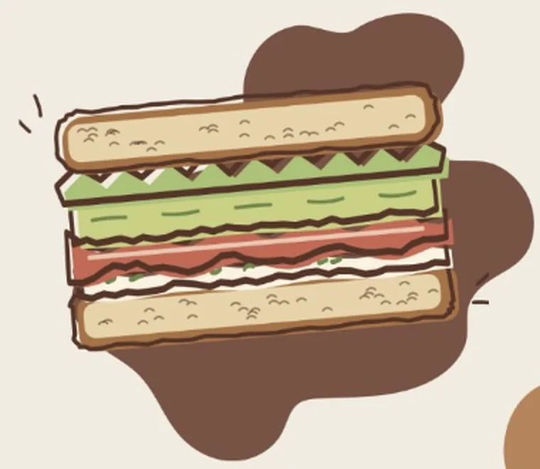
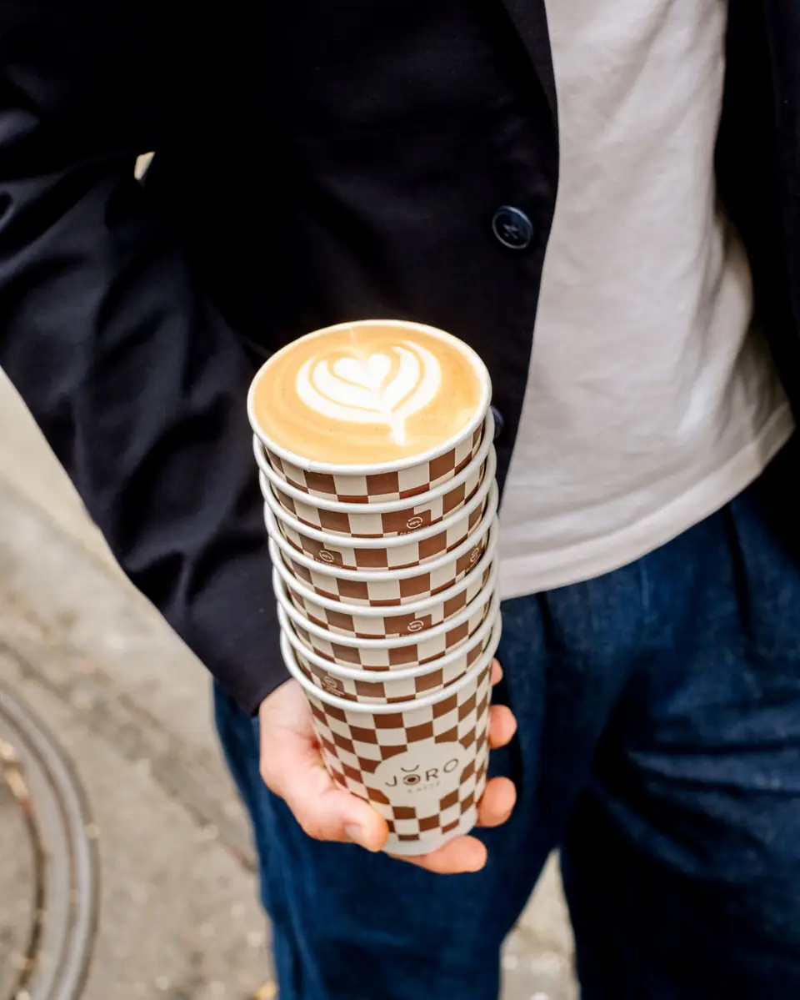
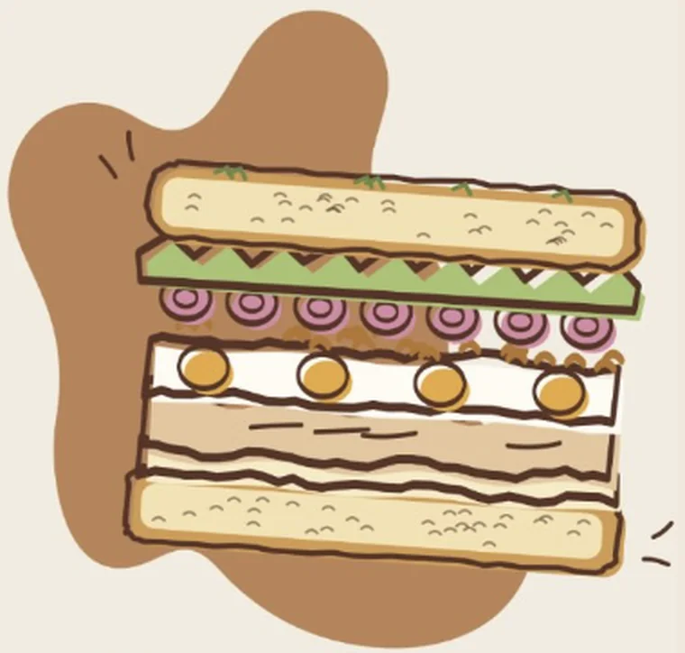
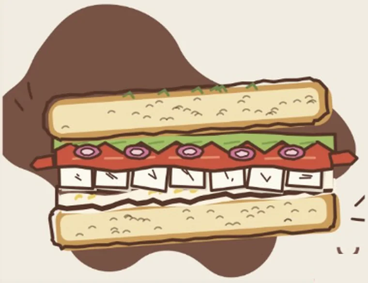
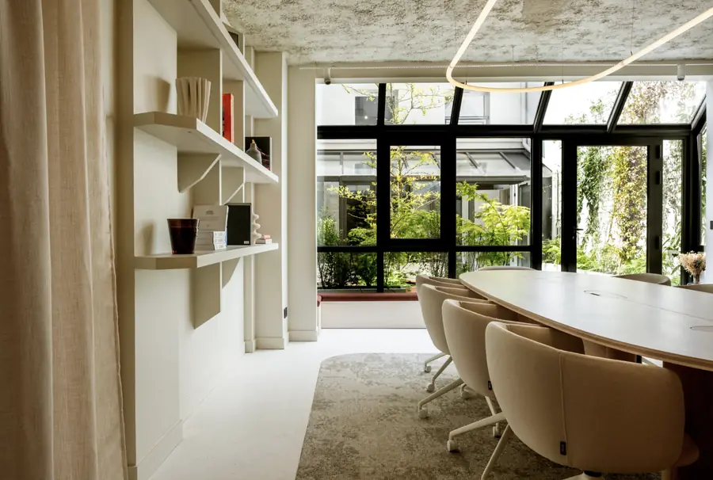
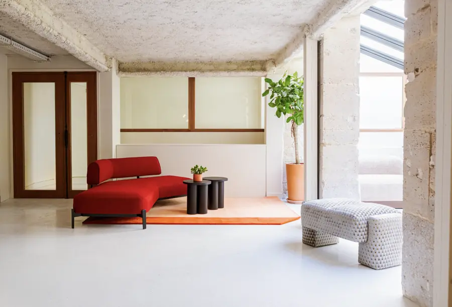
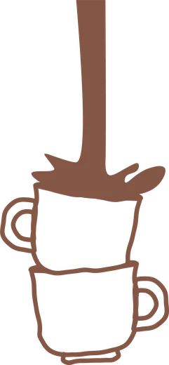

Bacon Avocat NEW
7,50 €Pain au levain, bacon, avocat, mayonnaise, yaourt grec, ciboulette, citron, salade iceberg.
Allergènes : gluten, œufs, moutarde, lait

Le lieu
Jöro Kaffé est pensé comme une adresse de quartier où l’on peut aussi bien chercher son café du matin que poser son ordinateur pour quelques heures.
Installé au 15 bis rue Jean-Baptiste Pigalle, dans le 9e arrondissement, le lieu mêle café de spécialité, design et travail nomade. Au comptoir, les cafés sont sélectionnés en collaboration avec Dose Family.
Un coffee shop, donc, mais avec cette petite différence : on peut s’y installer.
Travailler sur place
De quoi poser son ordinateur pour la matinée, l’après-midi, ou les deux.
Une connexion à disposition de nos clients.
Des prises pour garder la batterie pleine.
Des tables pensées pour un ordinateur et ses affaires.
Pour passer vos appels sans déranger.
Un cadre calme, pour rester concentré.
La carte
Nos cafés de spécialité sont torréfiés par Dose Family, torréfacteur parisien passionné par l’excellence et la traçabilité.
À boire sur place, à emporter, ou à savourer en travaillant.
Automne 2026
Mélange de farine de citrouille et d’épices en poudre
Infusion au concentré de gingembre biologique, citron et miel français
Le Dirty Chai ajoute 2 shots de café
Chocolat chaud, version viennois (+0,50 €)
Froid / Chaud
Sans supplément
Pour toutes nos boissons lactées et nos lattes spéciaux

Pain au levain, bacon, avocat, mayonnaise, yaourt grec, ciboulette, citron, salade iceberg.
Allergènes : gluten, œufs, moutarde, lait

Focaccia, poulet, œuf dur, mayonnaise, oignons frits, pickles d’oignons rouges, salade iceberg.
Allergènes : gluten, œufs, moutarde, lait

Baguette tradition, féta, poivrons en lanières, sauce yaourt-citron, pickles d’oignons rouges, salade iceberg.
Allergènes : gluten, lait
VégétarienPrix TTC. Liste des allergènes disponible sur demande.
Ils en parlent
« Très belle expérience, j’y retournerai pour coworker ! Le café est bon, le service très agréable, l’ambiance calme et reposante. »Leila · Avis Google
« Très calme pour le work et prix très corrects. »Doudou · Avis Google
« Un endroit idéal pour travailler autour d’un café. Le café est délicieux et le barista réalise de superbes petits dessins sur les lattes ! »Arina · Avis Google (traduit de l’anglais)
Note moyenne et nombre d’avis relevés sur notre fiche Google.
Aussi à la Jöro House
Jöro Kaffé est le coffee shop de la Jöro House. La maison accueille aussi vos projets.
Une salle de 13 m² pour 2 à 4 personnes, avec micros, écran et Wi‑Fi.
Découvrir la salle de podcast (nouvel onglet)
Une salle équipée de visioconférence pour vos réunions et rendez-vous d’équipe.
Découvrir la salle de réunion (nouvel onglet)
140 m² modulables, jusqu’à 50 personnes assises, pour vos séminaires, lancements et cocktails.
Découvrir l’espace événementiel (nouvel onglet)
Infos pratiques
15 bis rue Jean-Baptiste Pigalle
75009 Paris
Métro Trinité – d’Estienne d’Orves
Accessible aux personnes à mobilité réduite.
Sans réservation
Fermé le mercredi 11 novembre (jour férié).
Jöro Kaffé
15 bis rue Jean-Baptiste Pigalle
75009 Paris
La carte Google n’est chargée qu’après votre clic.